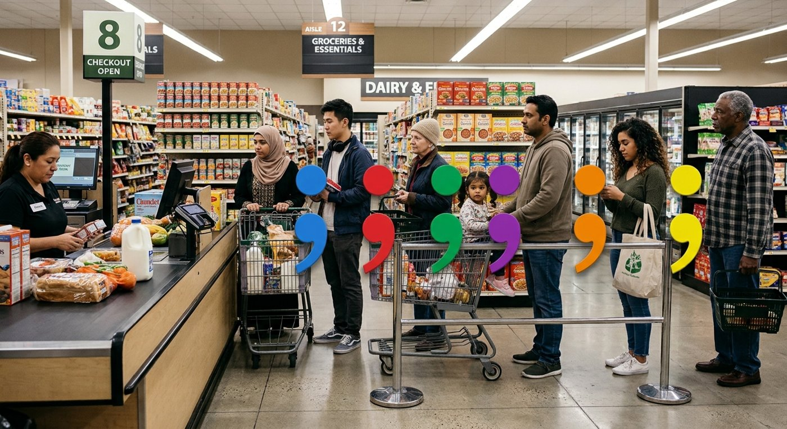
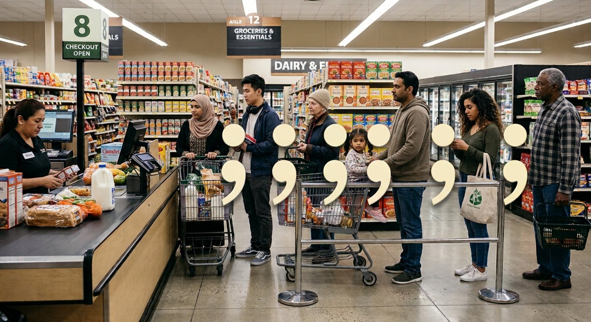
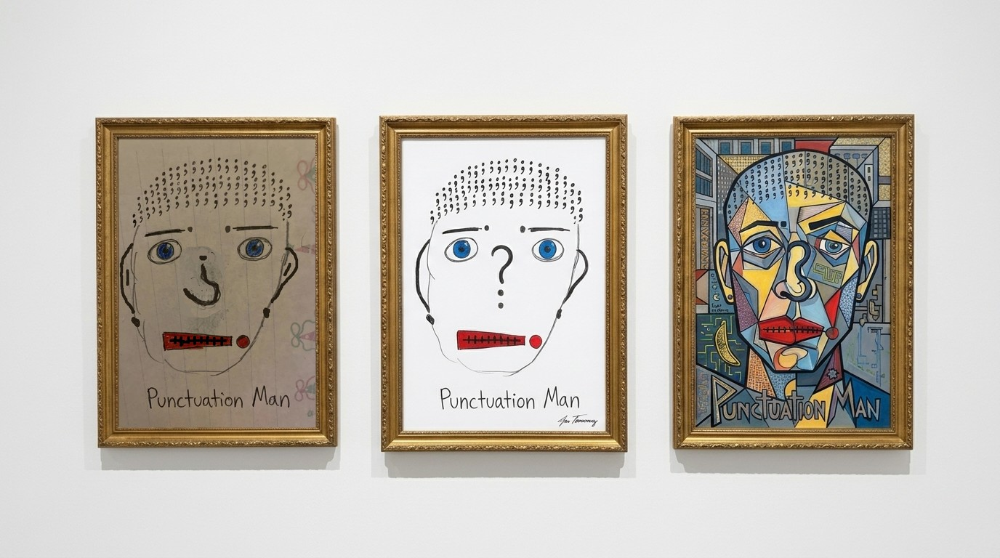

Prompting and what counts
Week 12 · Wednesday · the visual elementMy three prompts to Gemini
- I need a photorealistic image of diverse folks waiting in line at the grocery store in a clear line from the side (like Mario Bros).
- Now put large semicolons between each person. Different colors, same size. Maybe half the height of the average person in line?
- Make those semicolons cream colored. I don't think black will pop well.
- A grocery store line.
- Large semicolons, different colors, the same size.
- Then cream semicolons.
- "From the side (like Mario Bros)." The line faces the camera.
- "Half the height." The semicolons are closer to a third.
- Signs and boxes that don't read: "Chundet" after prompt 2, "Cimmdet" after prompt 3.
- A line posed for the camera, not a real checkout line.
- I asked for one change, the color, and it redrew the whole picture.
What Gemini made


AI-made with Gemini.
Punctuation Man, three ways

Left: my drawing, placed in Gemini's frame. Middle and right: Gemini's versions. The frames and the wall are AI-made.
Talk about it
- The middle version "fixed" the nose into a plain question mark and cleaned up the paper.
- It signed a name that isn't mine.
- The cubist version kept the stitched mouth.
The guidelines: A visual element: a photograph, drawing, collage, map, or design of your own.
AI can extend or transform your work, but what AI makes is others' work. What you fed it is yours.
Does not count: Anything an AI made, even when it was made from your work.
So only the drawing on the left. The other two, labeled AI-made, with what I did and why, could be my transformed AI artifact.